The search & collection rebuild, documented end to end
A new Algolia-powered header search flyout and a reworked collection-page filtering experience. This hub explains what shipped, where it lives in the theme, and exactly how to edit each piece — in code or in the Shopify Customizer.
The work splits into two surfaces: the collection page (PLP) — where filters now live in the URL, the “Clear All” bug is fixed, and a new chip bar shows active filters — and the header search flyout, a brand-new predictive search with empty, typing, and no-results states.
Where every ticket landed
Status note TARET-226 (analytics) is in UAT and TARET-227 (performance) is Blocked — see Performance for what that means and a verdict. TARET-228 was canceled and was not built.
How to use this doc
Two audiences, one hub:
- Developers — each feature lists what it does, the exact files and line ranges, and how to extend it. File paths look like
assets/algolia_custom.js; line refs like:919–1008point into the live theme export. - Merchants / store admins — jump to the Merchant guide. It’s plain-language: what you can edit in the Theme Customizer and how, no code required.
Anything in monospace is a literal identifier — a file path, a URL parameter, an Algolia index, or a SKU. Red monospace is a theme file you can open. Design references throughout are the approved mockups (desktop + mobile).
URL filter persistence
Every active filter is written into the page URL in real time, so a filtered grid survives refresh, back-navigation from a product page, and link-sharing.
Apply Brand, Category, Colour, Price, the three toggles (In Stock / On Sale / New Arrivals), sort, or page, and the URL updates with no reload. Paste that URL anywhere — fresh tab, incognito, a teammate’s machine — and the same filtered grid loads. Hit back from a product page and the exact filter state returns.
# Example — brand + in-stock + price /collections/refrigerators?brand=Samsung,LG&in_stock=true&price=500:2500 # Example — category + sort + page /collections/cooking?category=ranges,wall_ovens&sort=price_asc&page=2
How it works
InstantSearch runs with a custom stateMapping router (not the default simple router) defined inline in assets/algolia_custom.js :919–1008. Two functions do the translating:
:921–977 — reads live InstantSearch state plus the custom DOM widgets, and writes URL params.:979–1006 — reads URL params on load / back-nav and restores InstantSearch state.The three toggles and the Category checkboxes aren’t InstantSearch widgets — they’re plain DOM. So they’re read straight from the DOM in stateToRoute and restored outside the router (toggles at :247–266, category at :1049–1060, and re-synced on browser back/forward by a popstate handler at :2433–2459). This split is deliberate — making them InstantSearch widgets caused a “filter instantly undone” bug.
Full parameter map
| Filter | URL param | Format |
|---|---|---|
| Search query | q | raw string (omitted if empty) |
| Brand | brand | comma-joined values |
| Colour | colour | comma-joined |
| Energy Star | energystar | comma-joined |
| Any other facet | facet_<slug> | comma-joined (auto fallback) |
| Price | price | lo:hi e.g. 500:1500 |
| Sort | sort | popular / price_asc / price_desc / title_asc / title_desc |
| Page | page | integer, only when > 1 |
| In Stock | in_stock | true when checked |
| On Sale | on_sale | true when checked |
| New Arrivals | new_arrival | true when checked |
| Category | category | comma-joined slugs |
For a standard refinement-list facet you usually don’t need to do anything — it’s auto-handled as facet_<slug>. For a pretty named param: add an else if branch in stateToRoute (:927–939) that writes route.yourparam, and a matching read in routeToState (:986–994). For a non-InstantSearch custom control (like the toggles), you also wire it in stateToRoute DOM reads (:963–968), the load restore (pattern at :247–266), the popstate re-sync (:2437–2450), updateFilters() (:300–351), clearAllFilters (:2475–2491), and the chip bar (:611–620).
The old #cat= hash workaround was not fully removed — it survives as a one-time migration shim at :865–881 (with a single history.replaceState at :877) that rewrites legacy #cat=… links into ?category=…. That’s intentional backward-compat, not stray code. __taInitialCatHash is gone.
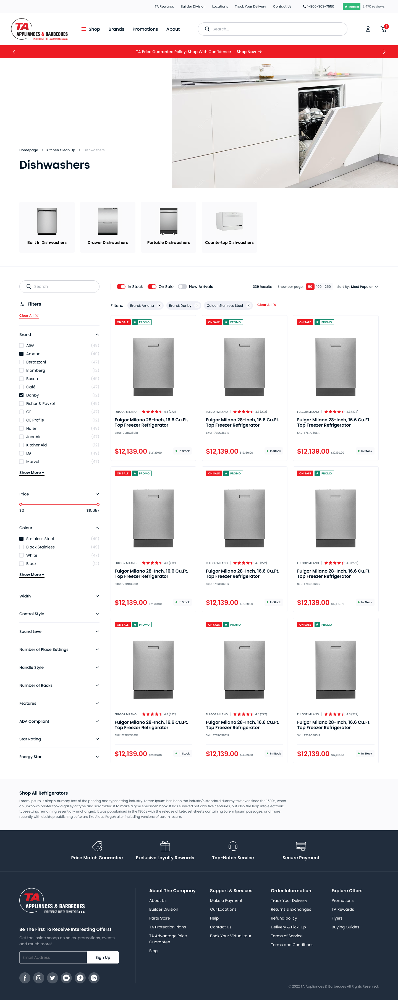
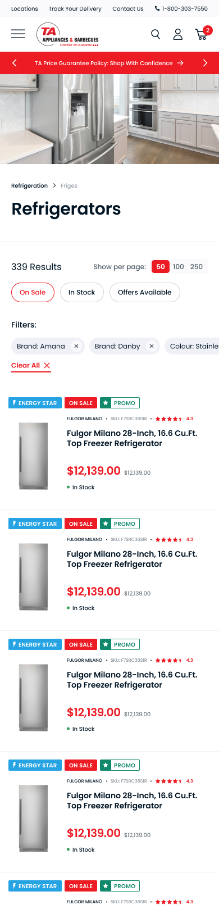
Clear All
One click now clears every active filter — not just Brand, which was the headline bug.
A single function, window.clearAllFilters (assets/algolia_custom.js :2474–2516), resets everything in order: the three toggles, the Category checkboxes, the price slider, and all InstantSearch refinements — then runs one search. Sort order is preserved; page resets to 1.
What it resets
- Unchecks
#on-sale/#in-stock/#new-arrivaland clears their.activeclass (:2475–2482). - Unchecks the Category boxes and removes the
checkedattribute so a URL-restored state can’t linger (:2488–2491). - Disables both Clear buttons immediately, before re-render (
:2493–2500). - Calls
search.helper.clearRefinements()— clears Brand, Colour, Energy Star, spec facets, and the price range (:2502–2504). - Runs one combined search via
configure.refine({ filters, page:0 })(:2506–2515). The URL cleans itself because the router then serialises an empty state.
Buttons wired to it
| Where | Selector | Wired in |
|---|---|---|
| Sidebar | .ais-ClearRefinements-button | document capture listener :2518–2525 |
| Applied filters bar | [data-clear-all] | same capture listener :2518–2525 |
| Mobile drawer | .clr-button span[data-clear] | assets/custom.js :710–720 |
The document listener is registered in the capture phase on purpose (:2525) so the DOM is cleared before InstantSearch’s own handler reads it — otherwise the URL keeps a stale ?on_sale=true.
Everything lives in clearAllFilters (:2474–2516). To keep a filter from being reset, remove its id from the toggle array at :2475 or replace the blanket clearRefinements() with targeted removeDisjunctiveFacetRefinement(...) calls. To add a new Clear-All trigger button, just give it [data-clear-all] — it’s picked up automatically.
Applied Filters bar
A row of removable chips above the grid, so a shopper always sees what’s filtering the results — especially after coming back from a product page.
When ≥1 filter is active, a bar appears above the grid: a Filters: label, one chip per active filter (Brand: Whirlpool ×), and a Clear All link. Each chip’s × removes just that filter; the bar hides itself when nothing is active. Chips wrap on desktop and scroll horizontally on mobile.
How it works
sections/algolia_product-list.liquid :133–142 — #applied-filters-bar (starts hidden), #applied-filters-chips, and the [data-clear-all] button.renderAppliedFiltersBar() in assets/algolia_custom.js :576–652, called from renderCurrentRefinements on every InstantSearch render.assets/algolia-product-list.css :1489–1562.Chips come from three sources merged together: InstantSearch facets via the currentRefinements connector (:584–608), the toggle checkboxes (:610–620), and the Category checkboxes (:622–626). Show/hide is just the hidden attribute toggled by chip count (:647–651). The price chip is a special case (:585–593): it shows $min – $max and its × clears both bounds and resets the slider.
Chip HTML template: :629–638. Attribute-label cleanup (stripping meta.algolia.* prefixes): :595–599. Which custom filters appear as chips: the toggle list at :611–614 and category block at :622–626. For pure visual changes, target .applied-filters-bar__chip, __chip-remove, __clear, __label in the CSS. Desktop wraps (flex-wrap:wrap); mobile (≤768px) switches to horizontal scroll.
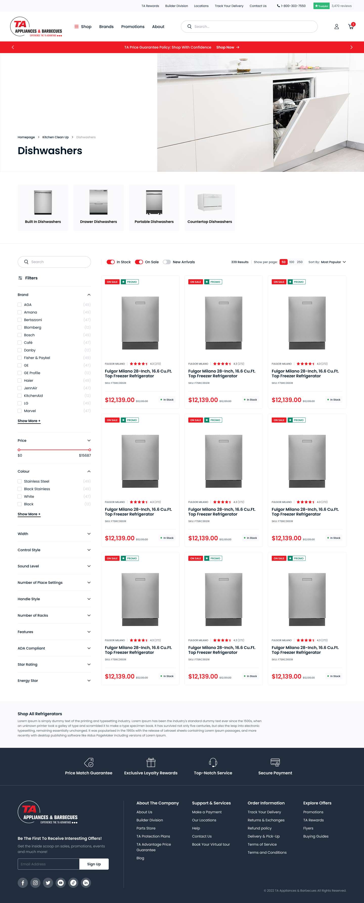
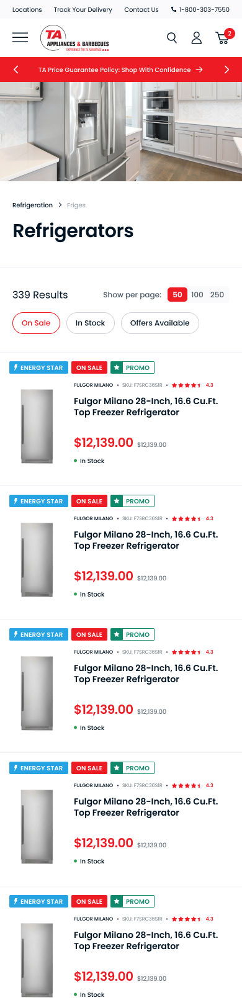
How the flyout works
A brand-new predictive search dropdown that opens on focus and runs live Algolia queries as the shopper types. It fully replaces the old quick-search.
assets/ta-search.js — empty / typing / no-results, SKU match, promo badges, caching.assets/ta-search.css — scoped to .ta-empty / .ta-typing / #ta-flyout-portal.sections/ta-search-flyout.liquid — the Customizer section; emits the config JSON and defines all merchant settings.snippets/header-inner.liquid — the .header-search input + desktop/mobile containers.snippets/offer-collection-data.liquid — the shared promo-badge helper.ta-search.js loads deferred, after the Algolia client (layout/theme.liquid :431), and the section is rendered globally (:638) so the config is present on every page. Opens on focus of .header-search; typing is debounced 200 ms; results begin after 2 characters (configurable 1–5). Desktop renders into a body-level portal #ta-flyout-portal pinned under the header; mobile renders into the existing mobile search modal.
The legacy assets/algolia_headercomplete.js is no longer loaded on normal pages — ta-search.js sets window.taSearchOwnsTyping = true and owns the dropdown. The one exception is the Shogun landing layout (layout/theme.shogun.landing.liquid), which still uses the old file and hasn’t been migrated.
Empty state (pre-typing)
What a shopper sees the instant they click the search bar, before typing: Promotions, Trending, and Need Help.
Promotions
Merchant-controlled cards from the Customizer (promotion blocks). Each has an image, heading, body, link, button label, and scheduling: start_at, end_at, and an always_active override. The active-window check runs in JS — isPromoActive(p, now) at assets/ta-search.js :10–15 — so scheduling is correct regardless of Shopify’s edge cache. If no promos are currently active, the whole row is hidden.
Trending
Automatic, from Algolia’s Query Suggestions index — not the Customizer. Fetched once per session (empty query, hitsPerPage:10), cached in sessionStorage under ta_trending with a 30-minute TTL (:148–173). If the index is missing or the call fails, the row hides cleanly — no hard-coded fallback list.
Trending (and the typing-state Search Suggestions) only populate if a Query Suggestions index exists in Algolia. In the current config query_suggestions_index_name is empty, so the code falls back to shopify_products_query_suggestions — that index must be created dashboard-side or these rows stay empty. See Algolia & the dashboard.
Need Help
Customizer help_link blocks (label + link + icon). The icon is a key mapped to an inline SVG in ta-search.js :20–25 — available icons: mail, delivery, parts, financing. Adding a new icon means adding the SVG and a matching schema option.
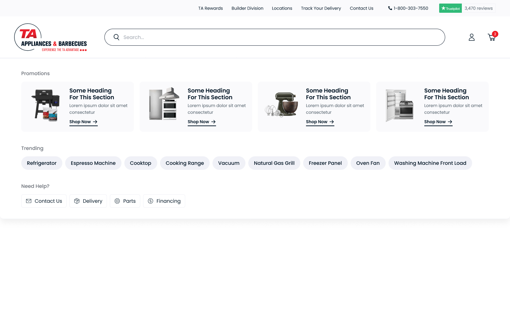
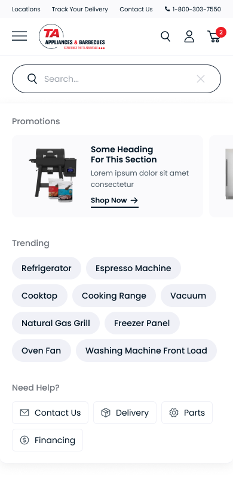
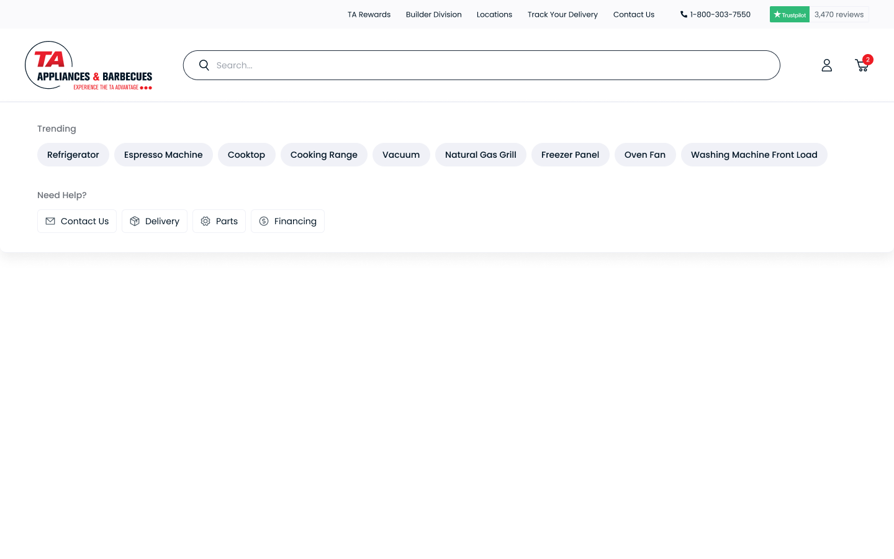
Typing state
Once the shopper types ≥2 characters, the panel becomes live federated results: suggestions, categories, a product grid, an exact-SKU match, and pages.
The queries
Each debounced keystroke fires three parallel Algolia batches (run separately so a missing index can’t break the others), then renders once all resolve (assets/ta-search.js :486–513):
| Batch | Index | Params |
|---|---|---|
| Products (main) | shopify_productsproducts | hitsPerPage:6, filters:'NOT product_type:Rebate', clickAnalytics:true |
| Categories | shopify_productscollections | hitsPerPage:6 |
| Exact SKU | shopify_productsproducts | query:'', filters:'sku:"…"', hitsPerPage:1 |
| Suggestions | shopify_products_query_suggestions | hitsPerPage:6 (only if index resolves) |
Render order: optional Promotions → Search Suggestions → Categories → Products (exact card + grid) → Pages. A sequence counter discards stale keystrokes so only the latest response paints.
Product cards
Each card (productCardHTML :327–352) shows: thumbnail (placeholder fallback), title, price (red), struck compare-at price only when on sale, SKU: …, and the PROMO badge. MPN is intentionally not rendered anywhere. The “See all N results” link uses the true nbHits and routes to /search?q=….
Exact-SKU match
The exact-match card is driven by a real filter, not relevance ranking. Query tokens of 4+ characters become sku:"X" OR sku:"Y" (:497–503); a hit renders as a full-width card with a red EXACT MATCH badge above the grid, and that product is de-duplicated out of the grid (:410–411). This is the salesperson workflow — type a model/SKU, get the exact product instantly. Requires sku to be a filterable facet in Algolia.
PROMO badge
Reused from the collection cards via the shared helper window.taPromoBadge.render(hit.collection_ids, window.taOfferCollData) (:333–334). The badge reads “Promo” for one active offer and “Promos” for more than one. The offer data and active-window logic live in snippets/offer-collection-data.liquid — see Algolia & the dashboard.
The badge keys off hit.collection_ids matched against window.taOfferCollData (a map of currently-active offer collections, scheduled in America/New_York) — not meta.custom.OfferGroup as some early ticket drafts suggested.
Promotions while typing
Controlled by the Customizer toggle promos_while_typing (default off). When on, the active-promo row stays pinned at the top of the typing panel using the same scheduling helper.
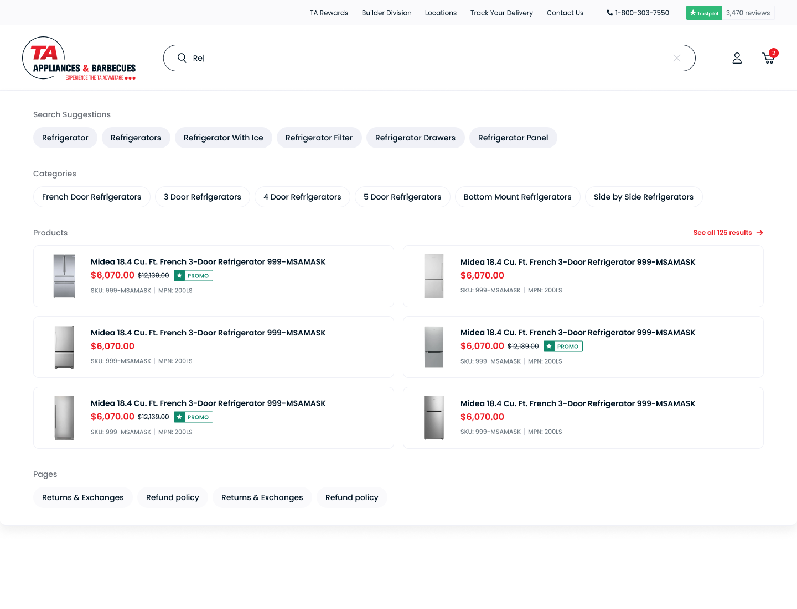
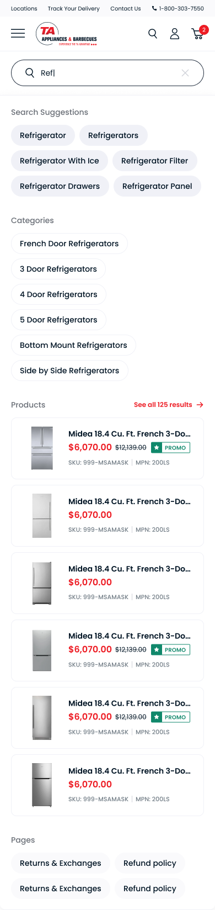
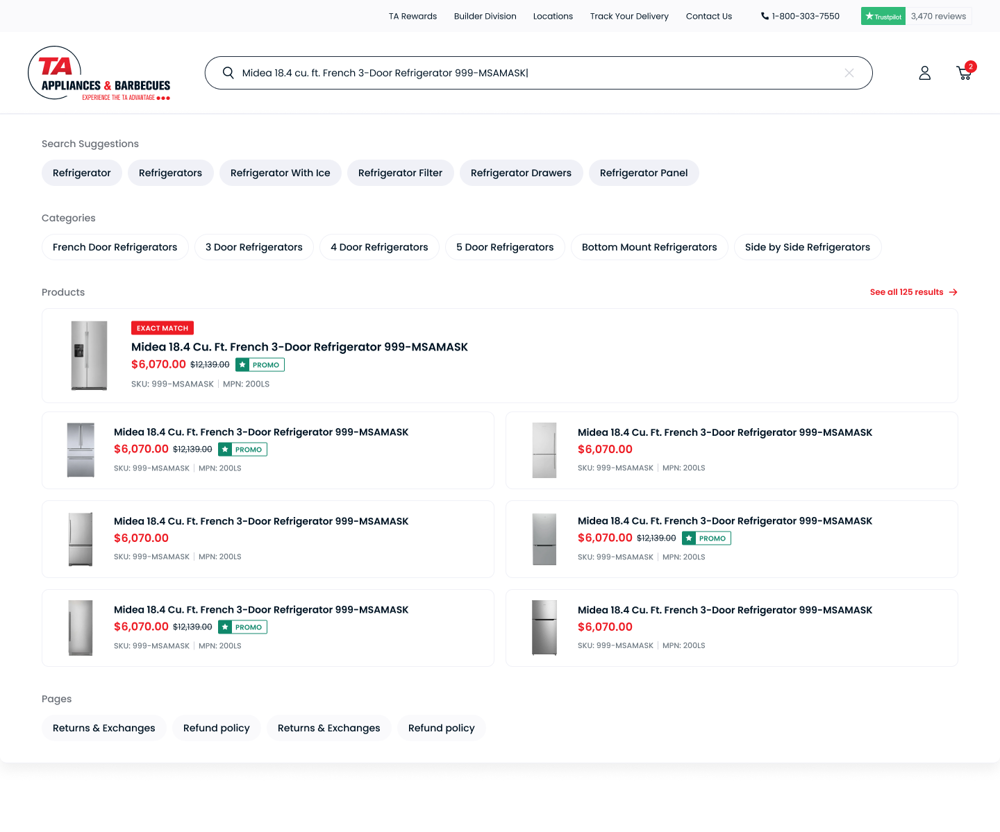
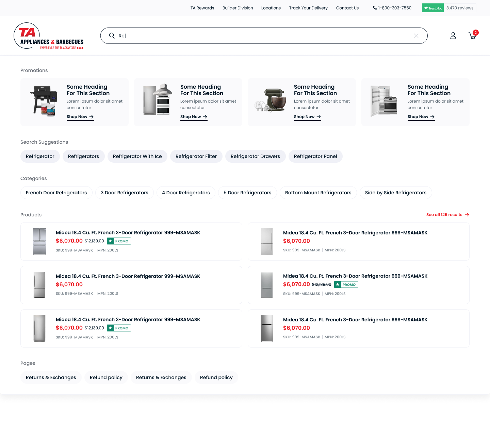
No-results state
The zero-product branch of the same typing renderer — a clean message plus a way forward.
When the main products query and the exact-SKU query both return zero (assets/ta-search.js :413–416), the panel shows only a message line and the Trending pills. Everything else — suggestions, categories, products, pages, need-help — is hidden, even if those queries had hits.
label_no_results with {query} substituted and HTML-escaped (:391–395). Default: “No results for ‘{query}’ — try a different search term”.role="status" aria-live="polite" region so screen readers announce it./search?q=… for the full results page.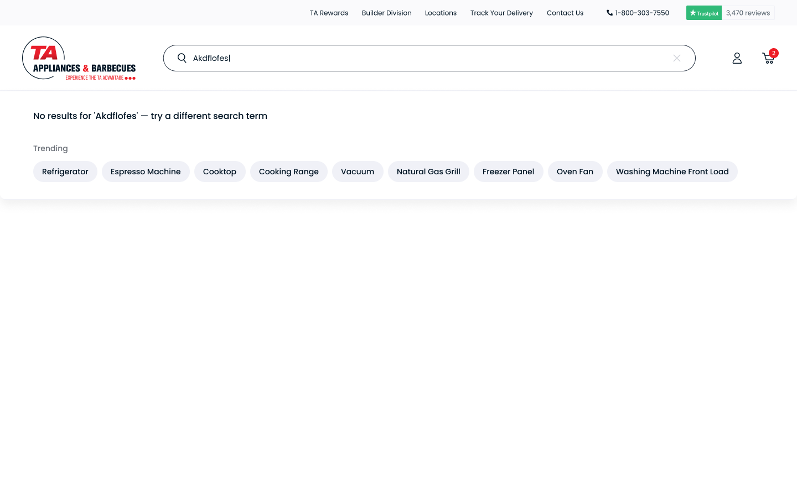
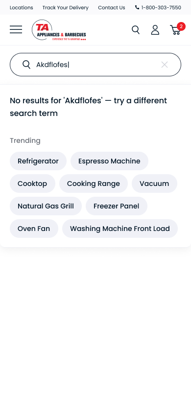
Merchant guide — editing in the Customizer
Everything you can change about the search dropdown lives in one place. No developer needed.
Shopify admin → Online Store → Themes → Customize. In the left panel, open the section named “Search Flyout.” It appears on every page because it loads site-wide.
Section settings (top of “Search Flyout”)
| Setting | What it controls | Default |
|---|---|---|
| Minimum characters | How many letters before product results appear (1–5) | 2 |
| Products shown while typing | Number of product cards in the grid (2–12) | 6 |
| Pin Promotions while typing | Keep promo cards visible after the shopper starts typing | Off |
| No-results message | Text shown when nothing matches. Type {query} and it’s replaced with what they searched. | “No results for ‘{query}’…” |
Promotions (block)
Promo cards on the empty search view (and, if pinned, while typing). Add up to 4. Use “Add block → Promotion,” drag to reorder, click to edit, trash to remove.
- Image, Heading, Body, Link, Button label (button defaults to “Shop Now”).
- Start / End — type as
YYYY-MM-DDTHH:MMin store time, e.g.2026-06-01T09:00. Blank Start = starts now; blank End = no end. The promo only shows inside its window. - Always active — ignores the dates and always shows (handy for evergreen promos or testing).
The format is exact — date and time joined by a T, in store time, not UTC. A mistyped date can make a promo silently never appear. If no promo is active, the whole Promotions row simply hides.
Need Help? links (block)
Quick help shortcuts on the empty view. Add up to 6: a Label, a Link, and an Icon chosen from Mail / Contact, Delivery / Shipping, Parts & Service, Financing. (New icon styles need a developer.) No links added = section hidden.
Page links (block)
Pages that can surface in the “Pages” row while typing. Add up to 12: a Label and a Link. A page shows only when the typed text appears inside the label — so use clear, keyword-rich labels (e.g. “Financing Options” surfaces on “finance” or “options”). Matching is on the label text only, not page content.
Trending — nothing to edit
The Trending pills are automatic, pulled from Algolia’s popular searches. There’s no Customizer field. If they’re empty, it’s the Algolia Query Suggestions index that needs setup — a developer/Algolia task, covered next.
Algolia & the dashboard
How the theme talks to Algolia, which indices it uses, and what must be configured dashboard-side for every feature to work.
Account & config
Config is auto-generated by the Algolia “AI Search & Discovery” Shopify app into assets/algolia_config.js (marked “do not modify”). The theme reads window.algoliaShopify.config.
R0XZPPGX0Oshopify_productsba2ed1edff1c2e7ced7afbddc7f0ab6a (public search-only — safe in client JS)CADIndices
| Index | Used for | Key attributes |
|---|---|---|
shopify_productsproducts | PLP grid, product cards, exact-SKU | title, handle, price, compare_at_price, sku, image, collection_ids, meta.algolia.* |
shopify_productscollections | Category pills, offer metadata | title, handle, meta.custom.offermetadata |
shopify_products_query_suggestions | Trending + Search Suggestions | query |
Sort uses replica indices shopify_productsproducts_title_asc / _desc (plus price replicas), which must exist dashboard-side.
Dashboard settings the build depends on
These aren’t in the theme — they live in Algolia and must be set for the features to work:
- Query Suggestions index — required for Trending and Search Suggestions. Currently
query_suggestions_index_nameis empty andautocomplete_query_suggestionsisfalse, so the custom flyout falls back to the nameshopify_products_query_suggestions. Create that index (Algolia → Query Suggestions, sourced from the products index) or those rows stay hidden. skufaceting — addskuto attributes for faceting asfilterOnly(sku)so the exact-match filter works.- SKU typo tolerance — add
skuto disableTypoToleranceOnAttributes so codes match exactly, not fuzzily. - Other filterable attributes —
collection_ids,meta.custom.OfferGroup, andproduct_typeare all used in filter strings and must be faceted.
Per-collection facets
Which facets show on which collection comes from the collection_facets object in assets/algolia_config.js, keyed by collection ID with a default fallback (selection logic in assets/algolia_facets.js.liquid :148–156). Because that file is auto-generated, change facets through the Algolia Shopify app’s per-collection facet UI, which regenerates the file — don’t hand-edit it.
Promo / offers data
snippets/offer-collection-data.liquid builds window.taOfferCollData from the shop metafield shop.metafields.accentuate.collections and each collection’s custom.offermetadata. An offer counts as active when, in America/New_York time, start_date ≤ today ≤ end_date (end-of-day) and it isn’t hidden. The shared window.taPromoBadge.render() then returns the Promo / Promos badge.
Shared display helpers
assets/algolia_helpers.js — reuse these, don’t re-roll formatters: displayPrice(item, distinct), displayStrikedPrice(price, compareAt), displayDiscount(...), instantsearchLink(hit), sizedImage(...), and per-size image helpers.
Reindex: Shopify admin → Algolia app → Indexing (the app owns sync; the theme can’t reindex). Query Suggestions: Algolia → Query Suggestions → create shopify_products_query_suggestions from the products index; confirm hits have a query attribute. SKU match: products index → Configuration → Facets → add filterOnly(sku); Relevance → Typo tolerance → add sku to the disable list. Then type a known SKU in the header search to verify the EXACT MATCH card.
Performance — the 15% threshold
The ticket: the new overlay + URL routing must not increase perceived product-grid load time by more than 15%, measured against a baseline captured before development.
The ticket calls for a baseline taken before development. No such baseline appears to have been captured, so there’s no recorded “before” number to compare a “after” against on the same deployment. That’s the gap to close — the measurement method below makes it repeatable.
What we measured (live, Jun 2026)
Lighthouse against /collections/dishwashers on production:
| Run | Perf | FCP | LCP | TBT | CLS |
|---|---|---|---|---|---|
| Desktop | 66 | 1.2 s | 1.7 s | 350 ms | 0.03 |
| Mobile | 25 | 10.8 s | 13.5 s | 2,980 ms | 0.07 |
What actually drives the cost
The low mobile score is not the Algolia search work. The dominant costs are:
- Server response (TTFB): the root document took 7–8.6 s on these runs — a Shopify/server-side cost present on every page, unrelated to this build.
- Third-party tags: reCAPTCHA (~376 KB), Podium (~254 KB), GTM/gtag (repeated), Facebook Pixel, Tolstoy — these dominate blocking time.
- The pre-existing Algolia bundle (
algolia_externals.js~514 KB, InstantSearch ~297 KB) loads on PLPs and predates this work.
Marginal cost of the new work — verdict
The code added by this build is small and well-isolated relative to the page’s existing bottlenecks:
- URL routing (
stateToRoute/routeToState) is synchronous string parsing during InstantSearch init — sub-millisecond. It doesn’t add network round-trips to the grid. - Applied Filters bar renders a handful of chips on each InstantSearch render — trivial DOM work.
- The flyout JS (
ta-search.js, ~29 KB) loads deferred and only executes when the shopper focuses search — it does not run during PLP grid load.
Conclusion: against the real grid-load bottlenecks (TTFB + third-party tags + the existing 800 KB Algolia bundle), the new overlay and URL routing add a negligible delta — comfortably inside the 15% budget. The honest caveat is that without a recorded pre-build baseline we’re reasoning from code + current measurements, not a strict before/after on one deployment.
Reproduce the numbers with:
npx lighthouse https://www.taappliance.com/collections/dishwashers \ --preset=desktop --only-categories=performance \ --output=html --output-path=./plp-baseline
To get a true before/after: measure a PLP on a theme copy without these changes, then the live theme, on the same machine/network. Compare the grid’s LCP / Time-to-Interactive. The saved reports for this run are in perf/ next to this hub. For a fairer “code” comparison, also run on a staging URL to remove the third-party-tag noise that dominates production.
Known issues / heads-up
Small things worth knowing before you touch the code or sign off.
- Query Suggestions index is dormant. Until
shopify_products_query_suggestionsexists in Algolia, Trending and the typing-state Search Suggestions render nothing (silently). This is the most user-visible gap. - Legacy
#cat=shim remains. The hash→query migration atassets/algolia_custom.js:865–881wasn’t removed; it’s intentional backward-compat but worth noting if the ticket expected full deletion. - CSS typo:
padding: 0xatassets/algolia-product-list.css:1561— invalid value, silently ignored by browsers. Harmless but should be fixed. - Empty-state open timing: if there are no active promotions and no help links and no cached trending, the flyout waits for the trending fetch before opening. With any promo or help link configured this is a non-issue.
- Shogun landing not migrated:
layout/theme.shogun.landing.liquidstill loads the oldalgolia_headercomplete.js. Migrate it for full parity. - Analytics (TARET-226) in UAT:
clickAnalytics:trueis set on the queries; the GTM/GA4 wiring is still being verified.
File & ticket reference
Files touched
| File | Role |
|---|---|
assets/algolia_custom.js | PLP: URL router, Clear All, Applied Filters bar, popstate sync |
sections/algolia_product-list.liquid | PLP markup: filters bar, toggles, mobile drawer buttons |
assets/algolia-product-list.css | Applied Filters bar + chip styles |
assets/custom.js | Mobile drawer Clear/Apply wiring |
assets/ta-search.js | Flyout: empty / typing / no-results, SKU match, caching |
assets/ta-search.css | Flyout styling |
sections/ta-search-flyout.liquid | Customizer section + config JSON |
snippets/header-inner.liquid | Search input + flyout containers |
snippets/offer-collection-data.liquid | Promo badge data + shared renderer |
assets/algolia_config.js | Auto-generated Algolia config (do not hand-edit) |
assets/algolia_facets.js.liquid | Per-collection facet → widget mapping |
assets/algolia_helpers.js | Shared price/image/link helpers |
layout/theme.liquid | Loads ta-search.js; renders the flyout section |
Tickets
Epic group TARET. Design reference: Trail Appliances (structure & interaction only — TA brand red #D51317 throughout). Full ticket detail in the Jira export shipped with this build.